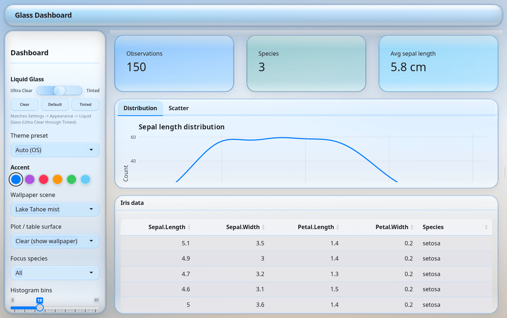
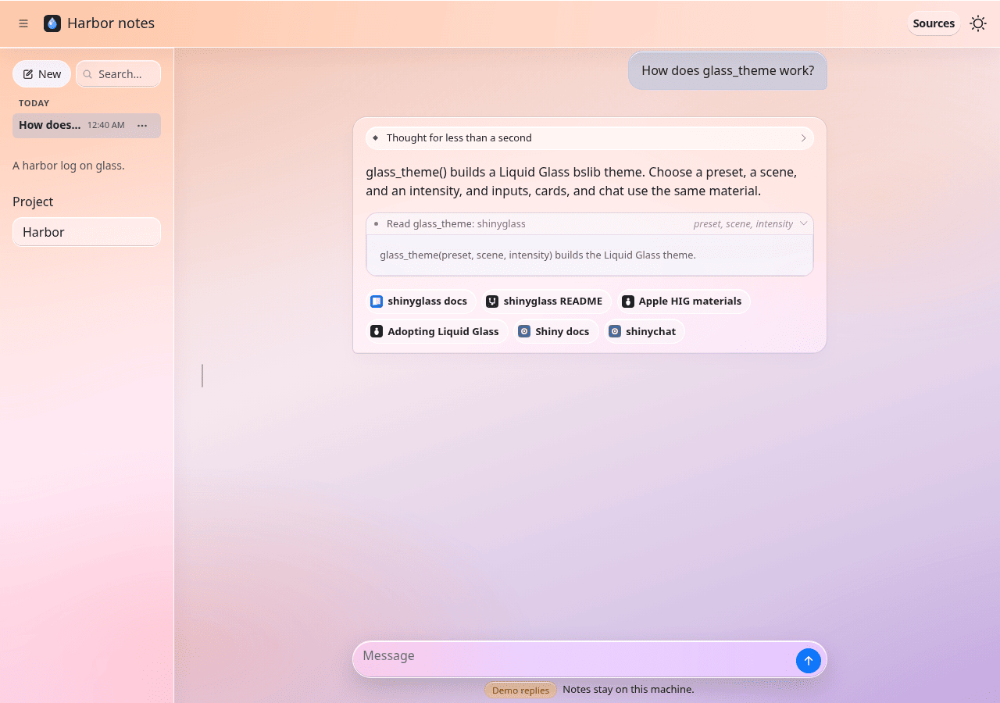
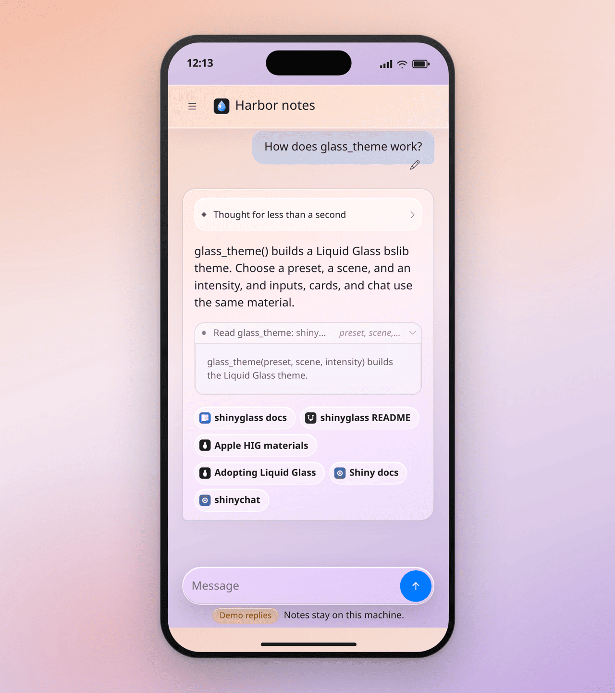
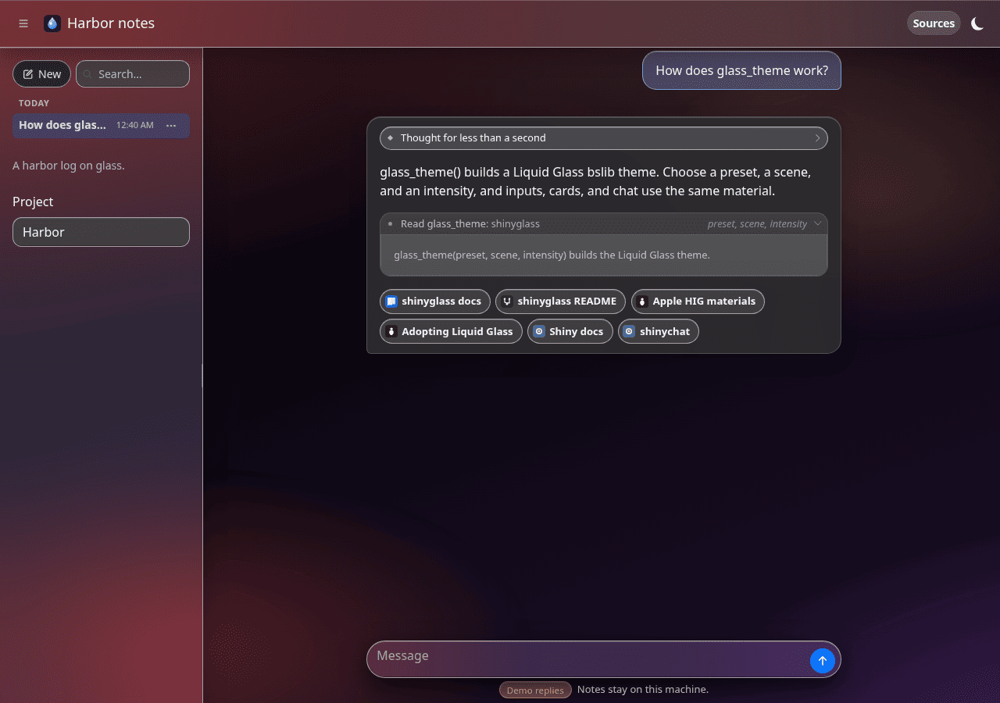

Glass themes for Shiny, built on bslib. Add translucent surfaces, live light/dark switching, and adjustable glass intensity to your app.
Documentation · Theming guide · Release notes

Install
CRAN 0.5.0:
install.packages("shinyglass")Development builds (GitHub):
# install.packages("remotes")
remotes::install_github("ericrayanderson/shinyglass")Mobile support
The same app works on desktop and phone with no extra code. Controls are sized for touch, sidebars and popovers open and close as expected on a phone, and pages do not scroll sideways. On a desktop, each live demo has a Phone view button that shows it in a phone-sized frame.


Harbor notes on desktop and on a phone, from the same code.
Quick start
library(shiny)
library(shinyglass)
ui <- glass_page(
title = "Hello, glass",
persist = TRUE,
scene = "tahoe",
sliderInput("n", "Bars", 5, 30, 15),
plotOutput("plot")
)
server <- function(input, output, session) {
observe_glass(input, session)
output$plot <- renderPlot({
pal <- glass_plot_colors(input = input)
barplot(seq_len(input$n), col = pal$fill, border = NA, col.axis = pal$ink)
}, bg = "transparent")
}
shinyApp(ui, server)glass_page() includes Light / Dark / Auto, the intensity slider, and accent wells. persist = TRUE (the default for glass_page()) remembers those choices between visits.
Quick recipe
On an existing bslib page, pass glass_theme() as theme and observe the controls:
library(shiny)
library(bslib)
library(shinyglass)
ui <- page_sidebar(
title = "Existing app",
theme = glass_theme(preset = "auto", intensity = 0.5),
sidebar = sidebar(
glass_theme_toggle(),
glass_intensity_slider()
),
"Main column"
)
server <- function(input, output, session) {
observe_glass(input, session)
}
shinyApp(ui, server)Intensity runs from 0 (Ultra Clear) to 1 (Tinted). The default is 0.5. Do not pass material = "clear"; that argument is deprecated.
The installed package has the full recipe (options, the 0.5.0 migration, and pitfalls): ?shinyglass and vignette("shinyglass").
Theming
The intensity slider mirrors iOS 27 Settings → Appearance → Liquid Glass (continuous Ultra Clear → Tinted). The default is 0.5, Apple’s midpoint. Browsers cannot read that OS slider, so the in-app control is the supported way to match the look. Reduce Transparency paints solid fills with no backdrop blur. Increase Contrast and forced colors override the glass variables.
Defaults also follow iOS 27 as far as a browser can. Chromium refracts the backdrop through a squircle lens. Safari and Firefox keep blur and tint. Active pills and tabs spring into each other, buttons press with a short spring, and floating bars pick up a scroll-edge fade. Tab bars shrink while you scroll down. Specular highlights are static (no pointer tilt). Icons in bars and non-primary buttons are monochrome clear glass (icon_style = "clear"). Pass icon_style = "color" to keep author colors. The detached sidebar is opt-in: floating_sidebar = TRUE.
Dense charts and tables can opt into a regular panel with glass_theme(plot_surface = "opaque") while nav and controls stay on glass. The default "clear" look still shows the wallpaper through plot hosts. Use glass_plot_surface_input() to toggle live (ggplot / plotly / gt / DT).
Named wallpaper scenes (tahoe, dusk, mesh, aurora, harbor, grove) and optional wallpaper= photos stay behind a blur + wash so text meets the contrast floor. For chromote, PDF, or screenshots, call glass_flatten() or open the app with ?glass_flatten=1.
Power users can read glass_css_tokens() and override --glass-* variables with glass_theme(tokens = list(blur = "28px")) without forking SCSS.

Live demos
Apps may take a moment to wake up.
| Demo | Explore |
|---|---|
| Harbor notes | Flagship chat on Liquid Glass |
| Basics | Theme switching and core controls |
| Dashboard | Cards, plots, and tables |
| Inputs | Shiny input controls |
| Olympic medals | A complete dashboard |
These five are the hosted set. plotly + gt stays a local example in inst/examples/plotly-gt-demo.R.

Harbor notes is the flagship demo: a shinychat window on the dusk wallpaper, with a floating composer, a scripted reply (thinking, a citation, and a tide-table tool card), and an offcanvas sources panel. Open Harbor notes. The hosted app answers with Gemini Flash and falls back to a local script if the API errors. The same app is in inst/examples/shinychat-glass.
Compatibility
Built for Bootstrap 5 and bslib. See compatibility for supported widgets and older layouts.
More: examples · experimental Python package · testing · deployment